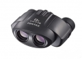

- 保罗式棱镜中心对焦- 采用Bak4玻璃及多层玻璃，提高透光率及反射率- 镜身橡胶镀膜提高握持感及抗冲击性
4
很小，可完全放在手掌里，外观也很有特点，带出去给妹子玩，一定能让妹子开心，非常适合妹子，非常适合初中生，再大一点的孩子和成人稍微费劲点，这个外形，还没有国内山寨，所以不用担心，反保罗结构，图像很清晰，很容易对焦，总而言之，可以称得上神镜，不要拿莱卡什么的来比较，价格差了十几倍，绝对不输2000元内的镜子。
主要是出瞳距离太小，目镜太小，容易对眼，时间长了就不舒服了